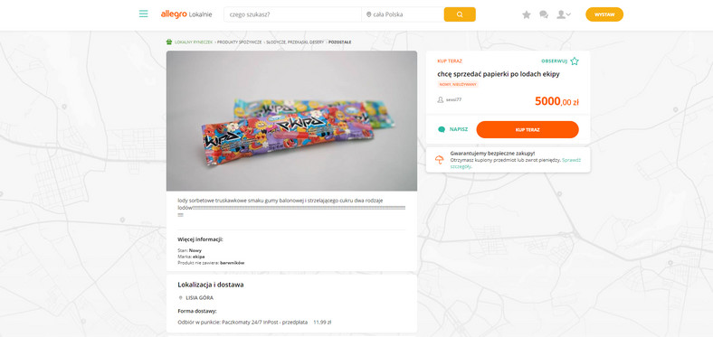
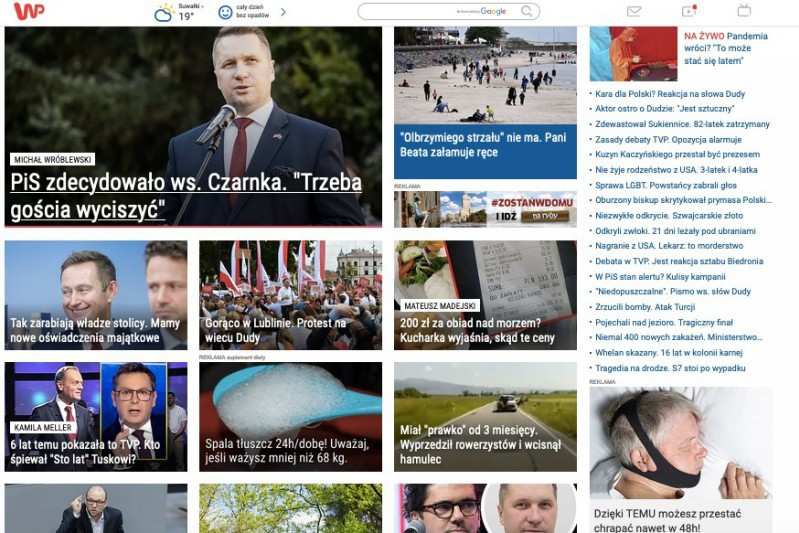
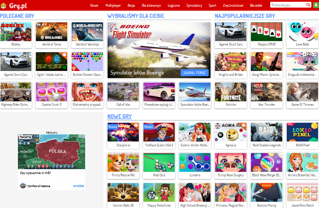

Do czego stosuje się strony internetowe
Do czego może nam posłużyć strona internetowa?
Na to pytanie istnieje ogrom odpowiedzi, a wręcz możliwości są nieskończone.
Strony internetowe między innymi wykorzystuje się do:
- Komunikacji (Facebook, NaszaKlasa etc.)
- Handel (OLX,Allegro, Ebay etc.)
 - Informacyjne (Wp.pl, tvn24.info etc.)
 - Rozrywkowe (Gry.pl, cda.pl etc.)
 - Streamingowe (Netflix, Youtube, Twitch etc.)
- Biznesowe (Hortex.pl, PepsiCoPoland.com etc.)